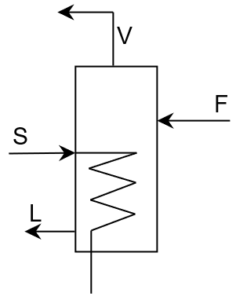

Ejercicio 2: Evaporador considerando entalpía de dilución
Enunciado
Un evaporador de un efecto es utilizado para concentrar \(9070~\text{kg/h}\) de una solución al \(20~\%\) de hidróxido de sodio hasta alcanzar un \(50~\%\) de concentración másica. La presión de manométrica del vapor saturado que entra al evaporador (\(\text{S}\)) es de \(1.37~\text{atm}\); la presión en el evaporador es \(100~\text{mmHg}\). Asuma que el coeficiente global de transferencia de masa es de \(1400~\text{W/m}^2\cdot\text{°C}\), y que la temperatura del flujo de alimentación es de \(37.8~\text{°C}\).
Encuentre lo siguiente:
El flujo másico de vapor saturado que sale del evaporador en la corriente \(\text{V}\).
El flujo másico de vapor saturado necesario en la corriente \(\text{S}\).
La economía del evaporador.
El área de evaporador requerido si la temperatura de condensación del vapor a \(1.37~\text{atm}\) es \(126.1~\text{°C}\).

Evaporador simple
Para sus cálculos utilice la siguiente información:
Temperatura de ebullición del agua a \(100~\text{mmHg}\): \(51.11~\text{°C}\)
Punto de ebullición de la solución a una concentración del \(20~\%\) de NaOH: \(91.67~\text{°C}\)
El calor latente de vapor saturado a \(1.37~\text{atm}\) es: \(2184.11~\text{kJ/kg}\)
La entalpía de agua sobrecalentada a \(91.67~\text{°C}\) puede ser calculada como:
Donde \(\Delta\text{EPE}\) es la elevación del punto de ebullición.
Ya que tenemos una solución salina, debemos considerar la entalpía de dilución. Para esto, utilice el siguiente gráfico.
Por definición, el \(\Delta\text{EPE}\) es la diferencia entre las temperaturas de ebullición de la solución y el agua pura. Ya que la fórmula para \(H_v\) se encuentra en función de la temperatura en Farenheit, hacemos el cambio de unidades.
Las otras entalpías las encontramos de forma gráfica: \(H_F:~20~\%~\text{sólidos a}~100~\text{°F}\)\(\rightarrow\)\(55~\text{Btu/lb}\) \(H_L:~50~\%~\text{sólidos a}~197~\text{°F}\)\(\rightarrow\)\(221~\text{Btu/lb}\)
Donde la diferencia de temperaturas \(\Delta T\) será la temperatura en el flujo de vapor \(\text{S}\) y la temperatura de ebullición de la solución en el evaporador.